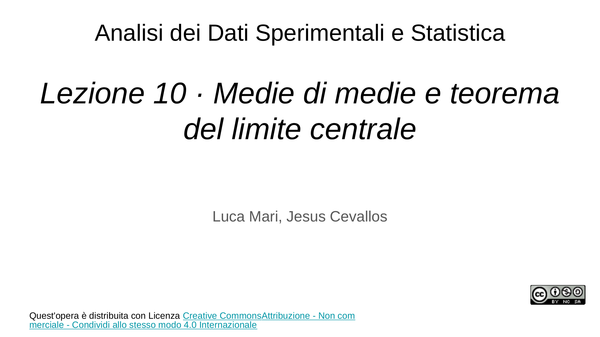
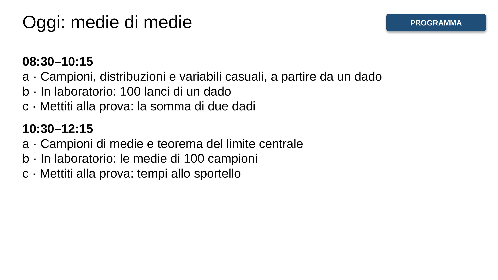
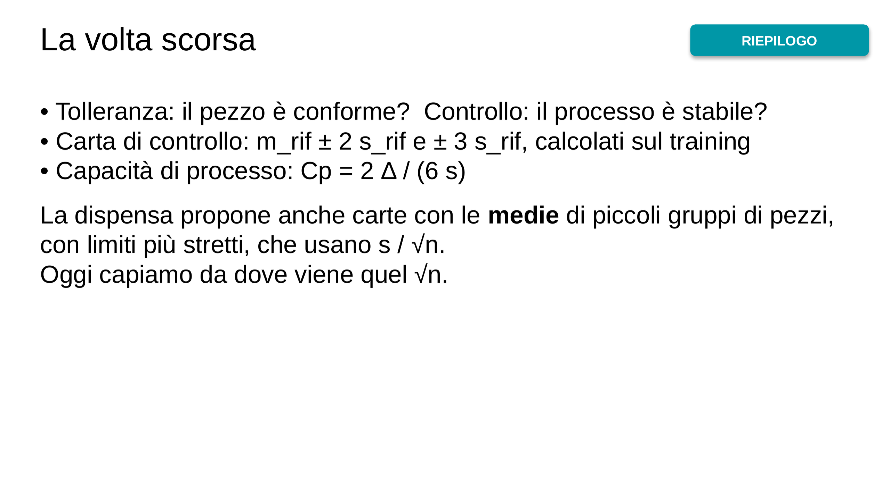
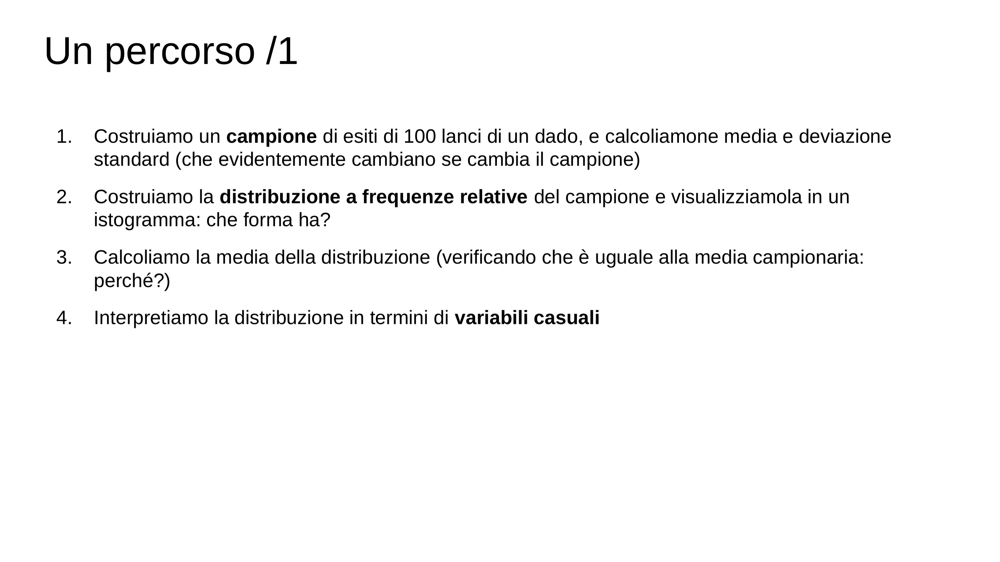
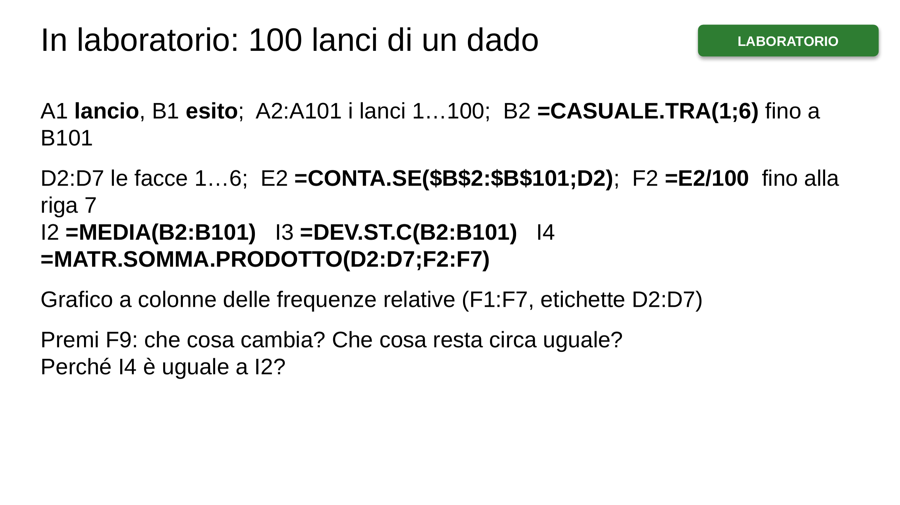
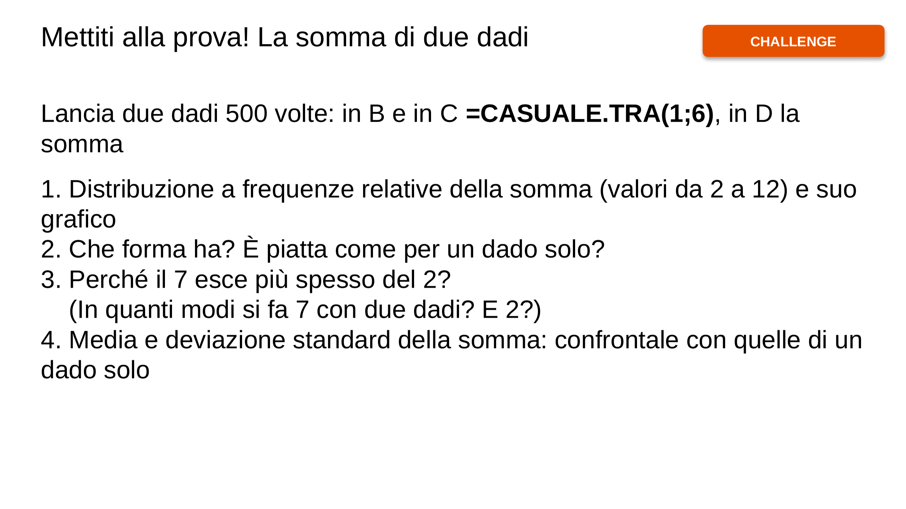
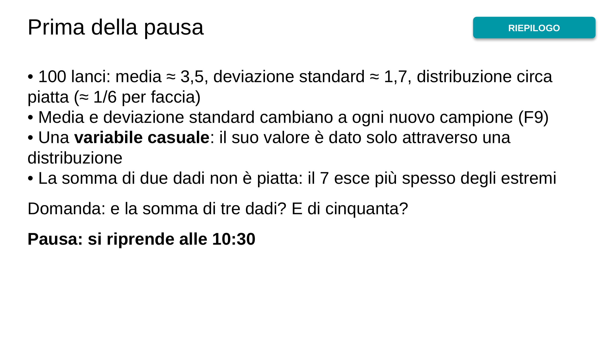
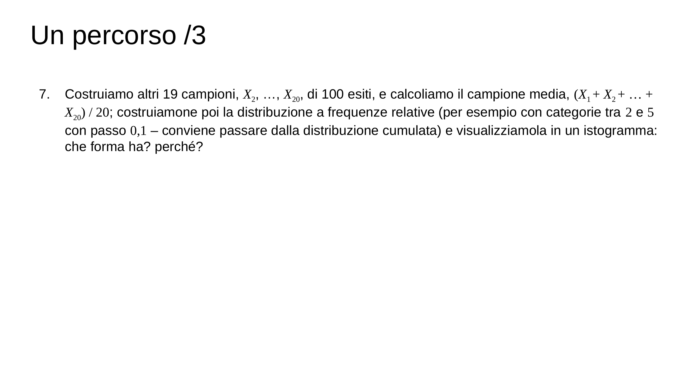
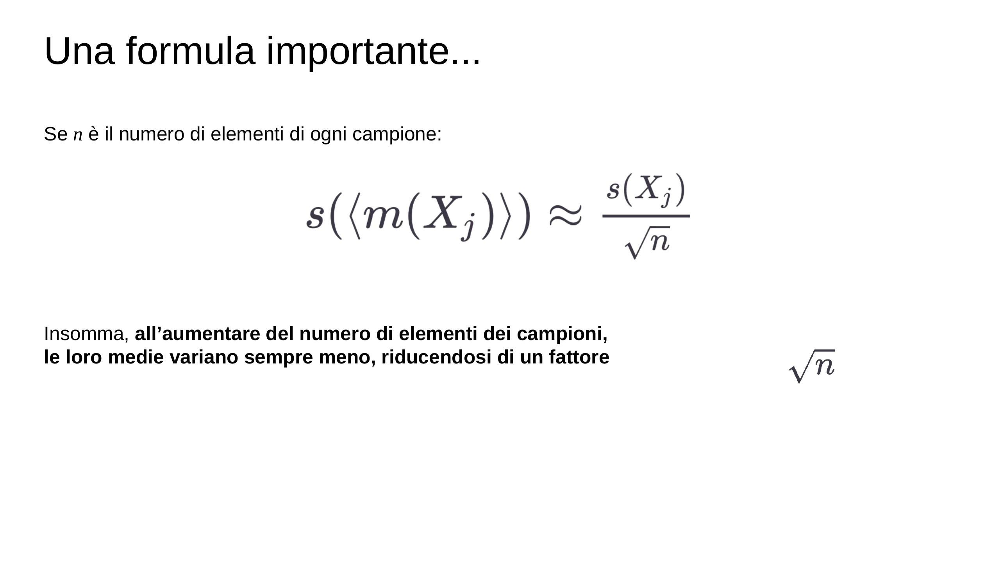
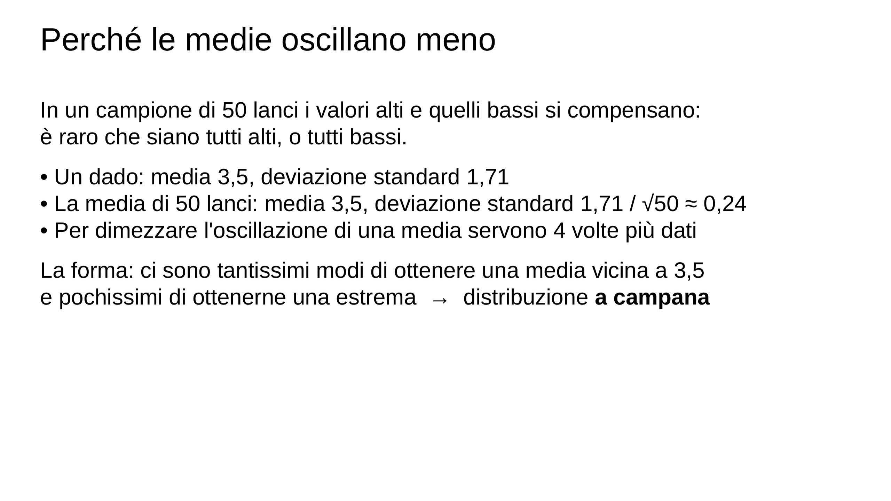
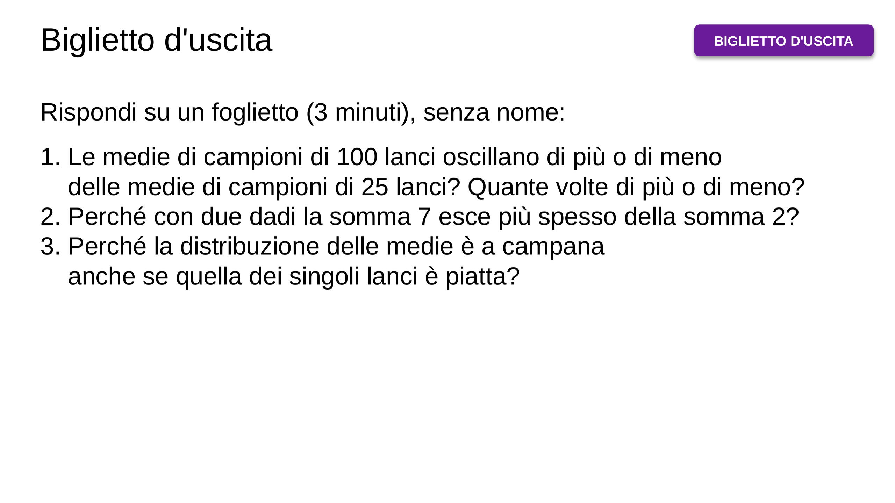

![Qualche suggerimento: – consulta l’“Aula Virtuale” su ecorsi – usa il materiale didattico, e non solo i tuoi appunti – frequenta le lezioni, e fallo in modo attivo, anche nella parte “laboratoriale” – lavora in modo costante – confrontati regolarmente con qualche compagna/o – cerca di capire e di imparare a risolvere problemi, non di memorizzare · (vedi il materiale didattico, capitolo 3. Statistica di base, ultime pagine) (e puoi valutare le tue conoscenze e competenze a partire dagli esempi di problemi proposti)](img/03-c06cd0b747.webp)
![Cos’è una variabile? · Una variabile X è un’entità matematica che ha un valore, x (per esempio, 1,75 m per la variabile altezza), e generalmente più di un valore è possibile, dunque x ∈ V = {x1, x2, …} (se un solo valore è effettivamente possibile, la variabile è una costante) Per chiarire la ragione della variabilità, si trattano le variabili come funzioni, da entità a valori, X: A → V, X(a) = x (per esempio, altezza(Alex) = 1,75 m) (le variabili sono perciò il correlato matematico delle proprietà empiriche, e infatti a volte non si distingue, e si dice “l’altezza delle persone è una varia…](img/07-23f63a9216.webp)
![Variabili ed eventi · Per ogni valore x ∈ V, chiamiamo X(a) = x (o anche X = x) evento elementare (per esempio, altezza(Alex) = 1,75 m è un evento elementare) Gli eventi si possono comporre, secondo le regole della logica o dell’insiemistica, e ottenendo così eventi composti (per esempio altezza = 1,75 m oppure altezza = 1,76 m oppure altezza = 1,77 m ... è equivalente all’evento composto altezza ≥ 1,75 m) Gli operatori di composizione più semplici sono: ⋁ (“oppure”, disgiunzione) ⋀ (“e”, congiunzione) — (“non”, negazione)](img/08-5e49c24a14.webp)
![Cos’è una variabile casuale? · Una variabile è deterministica quando, data l’entità, il suo valore è fissato Si chiama invece variabile casuale (o aleatoria, o stocastica) una variabile il cui valore è specificato solo attraverso una distribuzione D definita sull’insieme D dei suoi valori, una situazione che si indica X ~ D (e si legge: “X è distribuita come D”, oppure “X segue la distribuzione D”) · Dunque possiamo interpretare il nostro esperimento di 100 lanci di un dado come l’assegnazione di valori a una variabile casuale X che ha la distribuzione D che abbiamo costruito, supponendo ch…](img/09-ab7c81626f.webp)
![Un percorso /2 · Data dunque X ~ D, calcoliamo qualche frequenza relativa di eventi composti (per esempio f(X = 2 ⋁ X = 4 ⋁ X = 6) oppure f(— (X ≥ 4))) Possiamo considerare la media e la deviazione standard calcolate prima come statistiche della variabile casuale: m(X) e s2(X); consideriamo una funzione g(X) della variabile casuale X, per esempio X = x2, e calcoliamone la media, sul campione e sulla distribuzione Dunque ricordando che m(X) = ∑i xi f(X = xi), s2(X) = ∑i (xi – m(X))2 f(X = xi) allora m(g(X)) = ∑i g(xi) f(X = xi)) s2(g(X)) = ∑i (g(xi) – m(g(X)))2 f(X = xi)](img/10-03dcc5df4e.webp)
![Il teorema del limite centrale (*) · La media (o la somma, dunque) di variabili casuali indipendenti (**) e aventi la stessa distribuzione (***) tende a una distribuzione “a campana” (chiamata “normale” o “gaussiana”), indipendentemente dalla loro distribuzione, all’aumentare del numero di variabili sommate · (*) O “teorema centrale del limite”? (**) Condizione che chiariremo: indicativamente, due variabili casuali sono indipendenti se conoscere i valori di una non porta informazione sui valori dell’altra (***) Condizione nota con la sigla i.i.d., dall’inglese “independent and identically d…](img/15-86f7641066.webp)
![Un percorso /4 · Di ognuna delle 20 variabili casuali, X1, …, X20, calcoliamo la media, m(Xj): in questo modo abbiamo ottenuto un campione di medie campionarie Cosa possiamo dire della media, m(〈m(Xj)〉), di questo campione? · (la media è un operatore lineare, e quindi m(〈m(Xj)〉) è approssimativamente uguale a ogni m(Xj) ed è uguale alla media del campione di 100 x 20 valori) · E cosa possiamo dire della deviazione standard, s(〈m(Xj)〉)? · (mentre ogni s(Xj) è approssimativamente uguale alla deviazione standard del campione di 100 x 20 valori, s(〈m(Xj)〉) è molto più piccola: perché?)](img/16-d08f76b46b.webp)
![In laboratorio: le medie di 100 campioni · LABORATORIO · 100 campioni di 50 lanci, una colonna per campione: B1 campione 1, trascina a destra fino a CW1; A2:A51 i lanci 1…50 Casella nome: B2:CW51 › scrivi =CASUALE.TRA(1;6) › Ctrl+Invio B53 =MEDIA(B2:B51) e trascina a destra fino a CW53: le 100 medie B55 =DEV.ST.C(B2:CW51) tutti i lanci B56 =MEDIA(B53:CW53) B57 =DEV.ST.C(B53:CW53) le medie B58 =B55/RADQ(50) Istogramma delle medie: seleziona B53:CW53 › Inserisci › Grafico statistico › Istogramma Che forma ha? B57 e B58 sono simili?](img/19-c997f7d341.webp)
![Mettiti alla prova! Tempi allo sportello · CHALLENGE · Il tempo per servire un cliente, in minuti: tanti tempi brevi, pochi molto lunghi. Formula: =-3*LN(1-CASUALE()) (in media 3 minuti) 1. 100 giorni con 30 clienti al giorno: una colonna per giorno, come nel laboratorio 2. Istogramma dei tempi dei singoli clienti: che forma ha? 3. Il tempo medio di ogni giorno, e il suo istogramma: che forma ha ora? 4. Deviazione standard dei tempi singoli e dei tempi medi: il rapporto è circa √30 ≈ 5,5? 5. Perché a chi organizza il personale conviene ragionare sui tempi medi di una giornata?](img/20-58d65a562a.webp)
![La Parte 2 in una slide · RIEPILOGO · • Serie storiche: cammino casuale; statistiche progressive ($B$2:B2) e mobili (B2:B6) • Modelli: retta (PENDENZA, INTERCETTA), logaritmo (LN); qualità: R² e RMSE; estrapolazione • Residui: autocorrelazione e autocorrelogramma per scoprire i periodi • Controllo di processo: tolleranza e limiti di controllo, regole, Cp • Medie di campioni: oscillano come s / √n e hanno una distribuzione a campana Per la seconda prova: rifai le challenge e la prova del 28.1.16, e guarda gli «esempi di problemi» sull'Aula Virtuale](img/21-dda23d5753.webp)